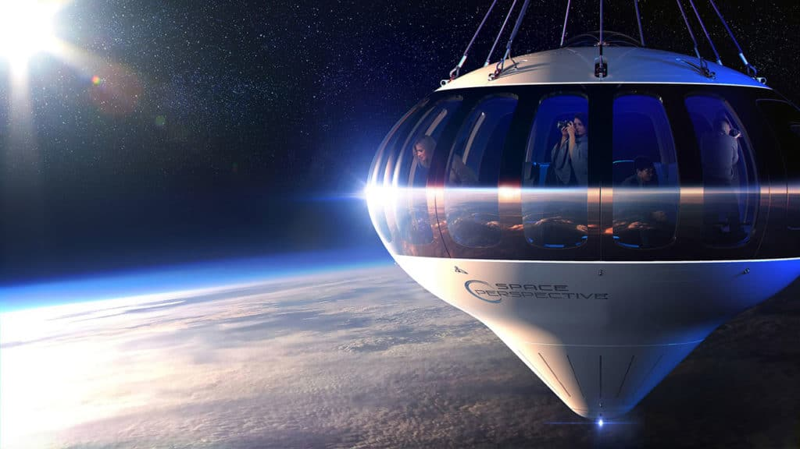
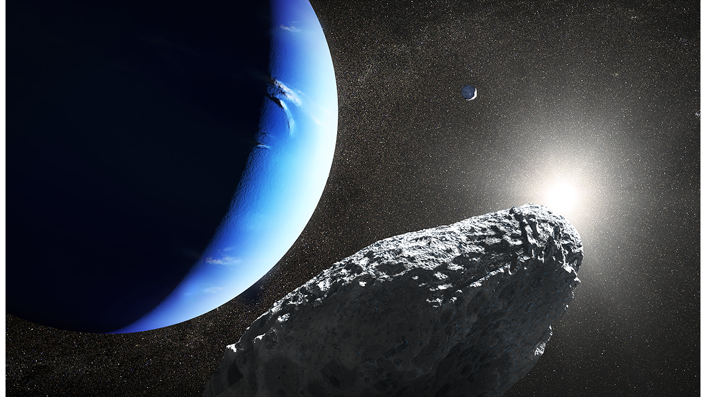

Blidegalleri



Neptune
Neptune, den åttende og ytterste planeten i solsystemet, ble
oppdaget i 1846 av Johann Gottfried Galle og Heinrich d'Arrest.
Som en iskjemp er den kjent for sin blå farge, som skyldes metan i
atmosfæren,
og har de sterkeste vindene av alle planetene. Med 14 måner,
inkludert den bemerkelsesverdige Triton,
og et svakt ringsystem, tar Neptune 165 jordår å fullføre en bane
rundt solen, og har en rotasjonsperiode på omtrent 16 timer.
Voyager 2, den eneste romsonden som har besøkt planeten, ga viktig
informasjon under sin flyby i 1989.
Atmosfærens sammensetning består hovedsakelig av kvælstoff (78%),
oksygen (21%),
og små mengder argon (0,93%) og karbondioksid
(0,04%). I tillegg inneholder
atmosfæren spor av edelgasser som neon, helium, krypton, og xenon.
Vanndamp,
som kan variere mellom 0% og 4%, spiller en viktig rolle i
værmønstre og klima, mens metan,
i små mengder, fungerer som en kraftig drivhusgass. Denne blandingen
av gasser er essensiell for
liv og klima på jorden.
Akkurat som Saturn har Neptun ringer, men de er mye tynnere og
mørkere,
noe som gjør dem vanskelige å se. De består hovedsakelig av
støvpartikler,
og deres eksakte sammensetning er fortsatt et mysterium.
Neptun har hele 14 måner, hvorav den største er Triton.
Triton er unik fordi den går i motsatt retning av Neptuns
rotasjon (retrograd bane),
noe som tyder på at den kan ha blitt fanget fra
Kuiper-beltet.
På Tritons overflate er det geysirer som spruter ut nitrogen-is.
Den eneste sonden som har besøkt Neptun er Voyager 2 i 1989.
Takket være denne sonden fikk vi detaljer om planetens
atmosfære, ringer og måner.
Voyager 2 oppdaget også at Neptun har ringer, selv om de er
svært mørke og vanskelige
å observere fra Jorden.